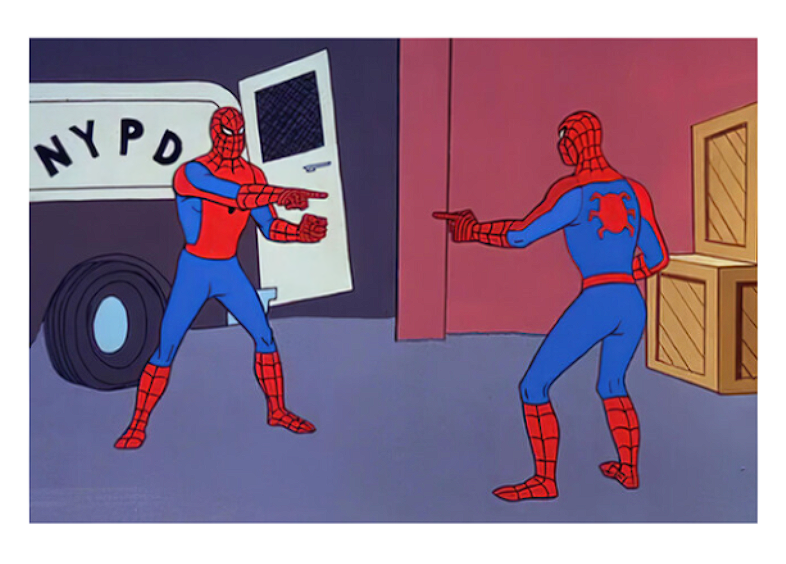

'Spider-Man: No Way Home': la idea de recrar el icónico meme del hombre araña surgió de Andrew Garfield
Marvel ha compartido compartió una fotografía donde podemos ver a los tres actores de 'Spider-Man:No Way Home' Tom Holland, Tobey Maguire, y Andrew Garfield recreado el famoso meme del hombre araña que lleva siendo viral muchos meses, donde ahora son tres los superhéroes los que están señalando, como si no se conocieran. un momento que puedo ver, de forma más sutil en la propia película.

El meme, que viene, cuya imagen proviene del episodio de los dibujos animados de Spider-Man de 1967,'doble identidad', en el que un villano intenta hacerse pasar por el héroe, se ha coompartido de nuevi para anunciar la venta de formaatos domésticos y aparición en digital de la película el 22 de marzo con una imagen especial de los actores durante eel rodaje, entre otros momentos detrás de las cámaras como Tobey Maguire imitando algunos pasos prohibidos de su ifame baile en 'Spider-Man 3'
